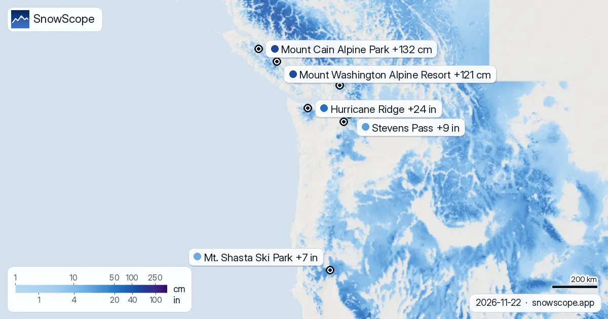

Mountain peaks across three continents set for 44-132 cm fresh snow
Three regions are about to see substantial snow. Jungfraujoch Snow Fun Park tops the Alps with 44 cm expected in the next 24 hours, while Mount Cain Alpine Park in Western Canada will receive the most snow overall: 132 cm in the next 72 hours.
See the live snow forecast for Mount Cain Alpine Park in the SnowScope appSnow depth, powder alerts and the 3D map, free.
Europe's heavy snow arrives now
The Alps are locked in a snow event starting today. Jungfraujoch Snow Fun Park leads the European resorts with 44 cm of new snow forecast to fall in the next 24 hours, then 64 cm by the end of the 72-hour window. That means the heaviest falls arrive first, over the high peaks above 3,400 m. Engelberg Titlis follows closely with 38 cm tomorrow, adding up to 48 cm total.
The snow line sits around 1,900 to 3,100 m across the Alps over the next three days. Lower resorts will see less accumulation and more of their snow on higher slopes. Alpe d'Huez Grand Domaine and La Grave both forecast 57 cm in 72 hours, but La Grave—at 3,543 m—will capture the best snow higher up, while Alpe d'Huez will see the main snow band drop below 1,900 m, spreading the new snow over a broader range.
| # | Resort | Region | +24 h | +72 h | Snow line |
|---|---|---|---|---|---|
| 1 | Jungfraujoch Snow Fun Park | Alps · Switzerland | 44 cm | 64 cm | 3,100 m |
| 2 | Alpe d'Huez Grand Domaine | Alps · France | 17 cm | 57 cm | 1,900 m |
| 3 | La Grave | Alps · France | 12 cm | 57 cm | 2,900 m |
| 4 | Engelberg Titlis | Alps · Switzerland | 38 cm | 48 cm | 1,900 m |
| 5 | Le Collet d'Allevard | Alps · France | 16 cm | 47 cm | 1,500 m |
| 6 | Les Deux Alpes | Alps · France | 10 cm | 46 cm | 2,100 m |
| 7 | Les Entremonts | Alps · France | 17 cm | 43 cm | 1,700 m |
| 8 | Les 7 Laux | Alps · France | 13 cm | 43 cm | 1,600 m |
| # | Resort | Region | +24 h | +72 h | Snow line |
|---|---|---|---|---|---|
| 1 | Hurricane Ridge | US West · United States | 6 in (16 cm) | 24 in (61 cm) | 5,600 ft (1,700 m) |
| 2 | Mt Baker | US West · United States | 1 in (2 cm) | 15 in (38 cm) | 5,200 ft (1,600 m) |
| 3 | Stevens Pass | US West · United States | 0 in (0 cm) | 9 in (22 cm) | – |
| 4 | Alpental | US West · United States | 0 in (0 cm) | 7 in (18 cm) | – |
| 5 | Mt. Shasta Ski Park | US West · United States | 0 in (0 cm) | 7 in (17 cm) | 3,600 ft (1,100 m) |
| 6 | Boreal | US West · United States | 0 in (0 cm) | 6 in (16 cm) | 5,900 ft (1,800 m) |
| 7 | Crystal Mountain | US West · United States | 0 in (0 cm) | 6 in (16 cm) | 3,600 ft (1,100 m) |
| 8 | Northstar at Tahoe Resort | US West · United States | 0 in (0 cm) | 6 in (15 cm) | 6,200 ft (1,900 m) |
| # | Resort | Region | +24 h | +72 h | Snow line |
|---|---|---|---|---|---|
| 1 | Mount Cain Alpine Park | Western Canada · Canada | 15 cm | 132 cm | 800 m |
| 2 | Mount Washington Alpine Resort | Western Canada · Canada | 24 cm | 121 cm | 1,000 m |
| 3 | Whistler Blackcomb | Western Canada · Canada | 8 cm | 101 cm | 1,200 m |
| 4 | Ski Callaghan | Western Canada · Canada | 5 cm | 54 cm | 1,100 m |
| 5 | Grouse Mountain | Western Canada · Canada | 10 cm | 32 cm | 1,400 m |
| 6 | Cypress Mountain | Western Canada · Canada | 10 cm | 30 cm | 1,400 m |
| 7 | Sasquatch | Western Canada · Canada | 6 cm | 27 cm | 1,500 m |
| 8 | Mt Seymour | Western Canada · Canada | 7 cm | 19 cm | 1,400 m |

Western Canada dominates with exceptional totals
British Columbia is the story of the next three days. Mount Cain Alpine Park and Mount Washington Alpine Resort forecast snow totals that dwarf the Alpine resorts: 132 cm and 121 cm respectively by 2026-11-25. These figures come as the snow line drops to between 800 and 1,000 m, so the new snow will reach the base areas and cover a wide elevation band.
Whistler Blackcomb sits third with 101 cm, still a substantial event. The snow begins soon and builds steadily. Mount Cain gets 15 cm in the next 24 hours, Mount Washington 24 cm, then both resort benefit from the heaviest falls over days two and three. Even lower resorts like Grouse Mountain and Cypress Mountain will add 30-32 cm, though at lower heights the new snow may mix with rain nearer the base.

US West sees mixed timing
The Pacific Northwest and California mountains show a split pattern. Hurricane Ridge leads US resorts with 16 cm tomorrow and 61 cm total, the only US location to see meaningful snow in the next 24 hours. Mt Baker adds 38 cm over three days, but most of that comes later; tomorrow brings only 2 cm. Stevens Pass, Alpental and southern California resorts see minimal fresh snow in the immediate forecast—between 15 and 22 cm in 72 hours—and little or none tomorrow.
The snow line for the US West clusters between 1,100 and 1,700 m. This means early-season snow on lower resorts may be thin where it mixes with rain, so checking slope aspect and elevation on the day will be essential.
Mount Cain: a week to remember, but timing matters
Mount Cain Alpine Park's forecast 132 cm event sits in a wider context. The resort currently has only 10 cm measured at base level, well below the past winters' average of 59 cm for this date. However, the best snow weeks at Mount Cain are numbered 53, 15 and 16—that is, late December, mid-April and mid-April. Right now we are in week 47, so this event, though large, arrives outside the season's usual peak snow weeks.
The 132 cm forecast is built on our model estimates for the upper slopes. Early-season snow is often thinner and may contain rocks or ice patches, especially on lower terrain. The forecast snow line of 800 m brings new snow down low, but ground temperatures and the base layer matter as much as the volume falling from the sky.
What to watch over the next three days
The pattern is clear: start in the Alps and Pacific Northwest today and tomorrow, then the action shifts to Western Canada, where the heaviest accumulation happens in days two and three. By 2026-11-25, the Alps will have finished and the BC resorts will still be in the thick of it.
Forecasts can shift as systems develop, so check local conditions and avalanche bulletins before heading upslope. Early-season snow density varies; fresh snow at higher elevations on 44 cm days can ski differently than the same depth in January. Use the SnowScope app to track changes hour by hour and find the best snow by aspect and height.
Tips for skiers
- Hit the Alps tomorrow morning or Monday: Jungfraujoch, Engelberg Titlis and the Chamonix resorts will have the best conditions in their immediate window. The heaviest snow falls today and tomorrow; by Tuesday the front moves east.
- Western Canada skiers should plan for days two and three: Mount Cain and Mount Washington see only 15-24 cm tomorrow, but 100+ cm by Tuesday. Wait for the system to fully deliver unless you want to ski through the transition.
- Check the snow line before you drive: it drops between 800 and 3,100 m across these regions. Snow at base level in BC and the lower Alps may turn slushy or wet if the line sits high; aim for slopes at or above the forecast line height.
- In the US West, Hurricane Ridge is the outlier with 16 cm tomorrow; most other resorts should wait until Tuesday or later. Early-season coverage is thin everywhere, so scout rocks and ice patches carefully.
- Before heading off-piste, consult the official avalanche forecast for each country and resort. Rapid snow loading can trigger slabs; fresh early-season snow bonds unpredictably to the base.
About these numbers
Resort snow depths are the deepest snow on the resort's upper slopes from the SnowScope snow model (about 1 km, run of 22 November); they are estimates for an area, not a measurement at one point. Station values are measurements on the date shown. Forecasts can change. Always read the official avalanche bulletin before going off-piste.
Official avalanche bulletins: EAWS (Europe) · avalanche.org (US) · Avalanche Canada
Cite this report
For research, teaching or the press: the numbers and charts are free to reuse under CC BY 4.0 with this citation.
SnowScope (2026), Mountain peaks across three continents set for 44-132 cm fresh snow, https://snowscope.app/blog/en/2026/11/where-most-snow-falls-next-72-hours-22-november-2026.html, accessed 2026-11-22
SnowScope (Atlas Labs). (2026, November 22). Mountain peaks across three continents set for 44-132 cm fresh snow. SnowScope snow reports. https://snowscope.app/blog/en/2026/11/where-most-snow-falls-next-72-hours-22-november-2026.html
BibTeX
@misc{snowscope2026wheremostsnowfallsnext72,
author = {{SnowScope (Atlas Labs)}},
title = {Mountain peaks across three continents set for 44-132 cm fresh snow},
year = {2026},
month = nov,
howpublished = {\url{https://snowscope.app/blog/en/2026/11/where-most-snow-falls-next-72-hours-22-november-2026.html}},
note = {Published 2026-11-22 10:35 UTC; accessed 2026-11-22}
}· CC BY 4.0 · Methods, data and tools →
Mount Cain Alpine Park: snow and temperature by height, this winter vs last (tools) →
Follow Mount Cain Alpine Park
Free: a message when fresh snow is coming, and the forecast every morning.
More snow reports

December snow odds from 46 winters and checked day prices: Ski Cooper $49, Les 3 Vallées €75.70, Oukaïmeden no official tariff. Where a cheap December ski day works.

Pick a region, dates, budget and what matters; get every resort ranked with the likely snow at the start, the pass, hotel and food per person, chalets to book, and a game mode.

Himalaya snow cover in November 2026 from NASA MODIS: snow on 610,409 km² of ground above 2,000 m between the Hindu Kush and Bhutan, half the clear ground white from about 4,800 m in Nepal and 3,600 m in the Karakoram. The NDSI explained, plus shadows, cloud and the low autumn sun.